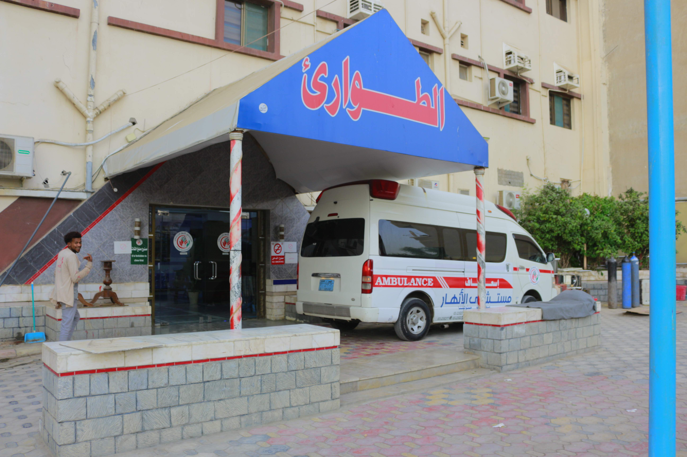
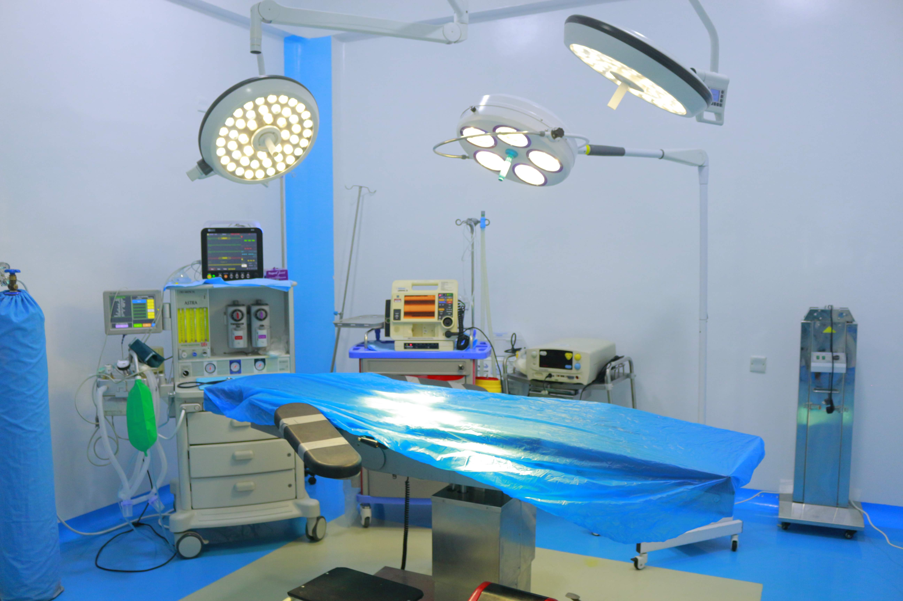
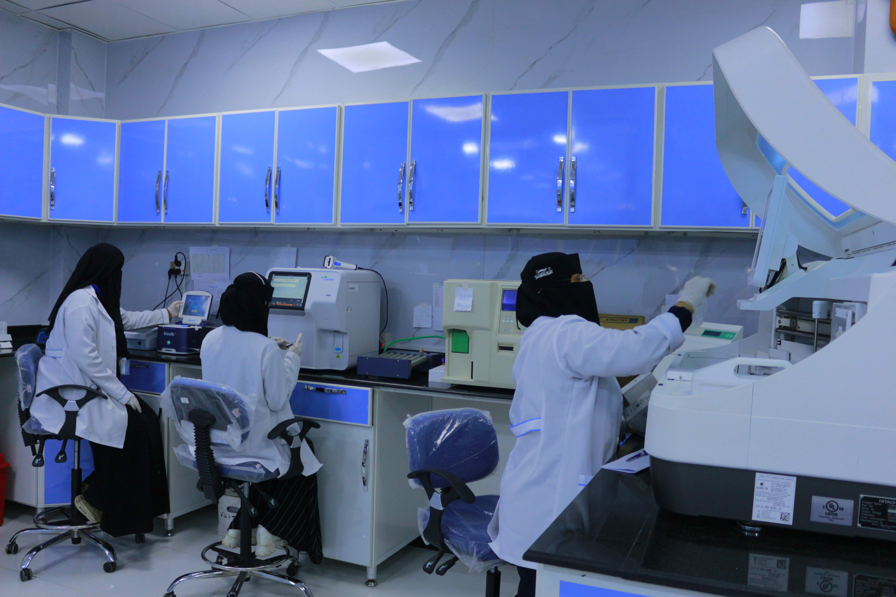
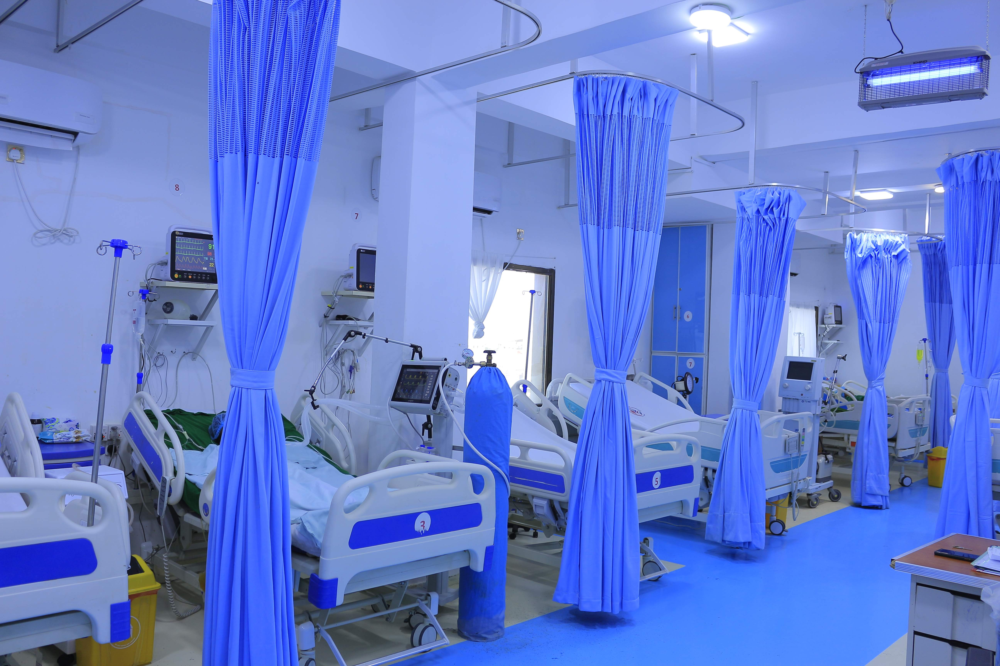
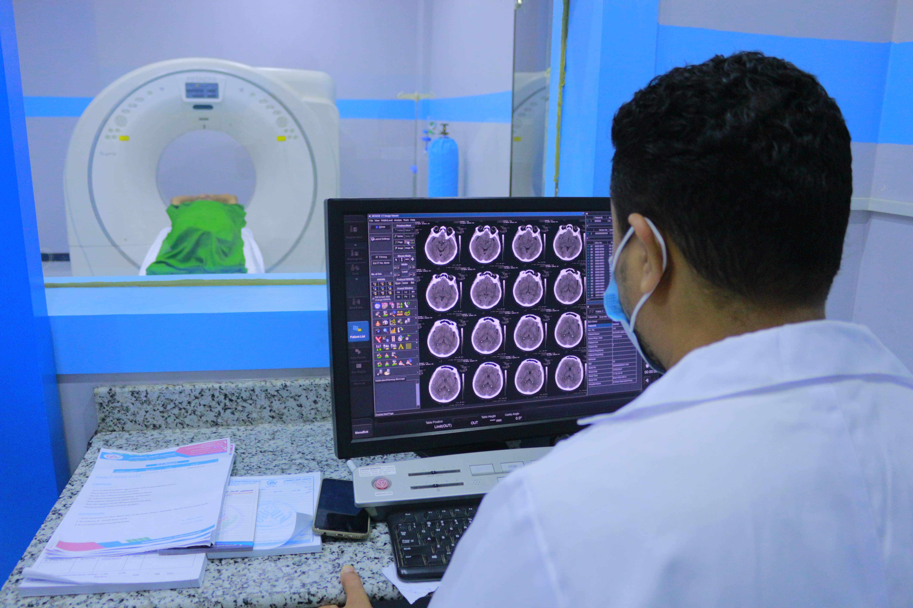
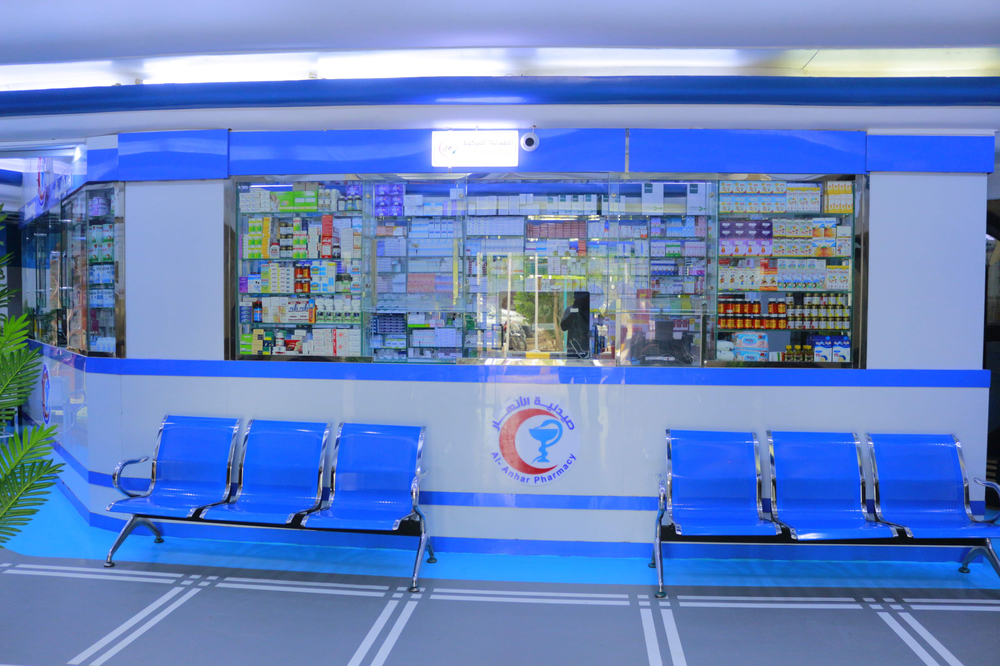
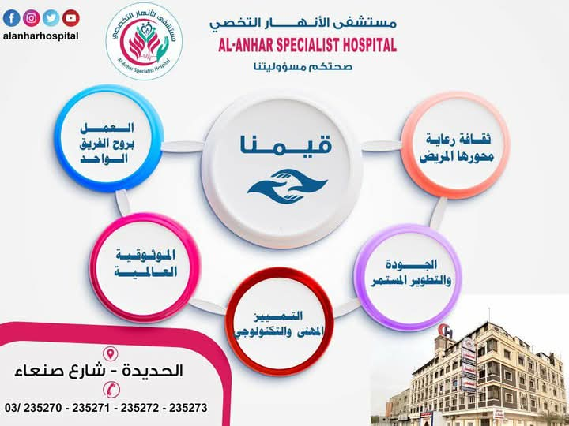
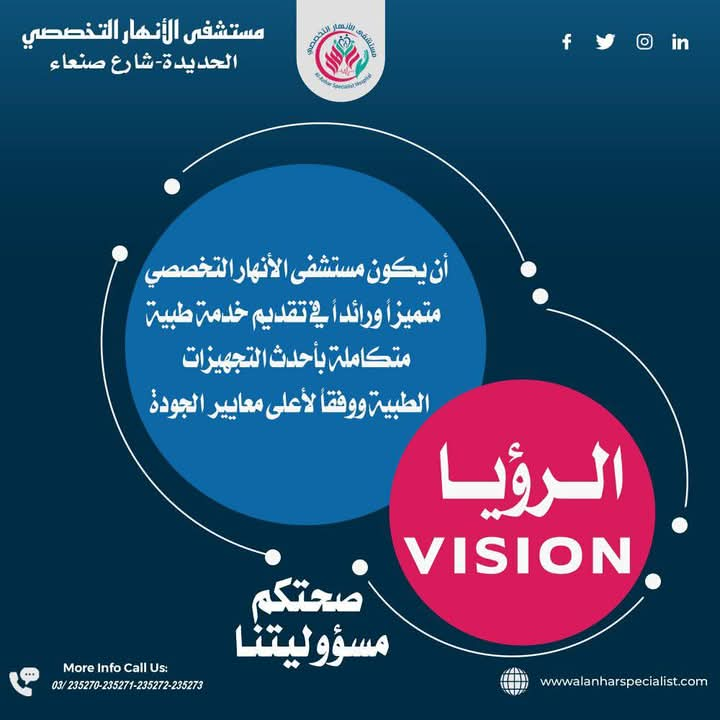
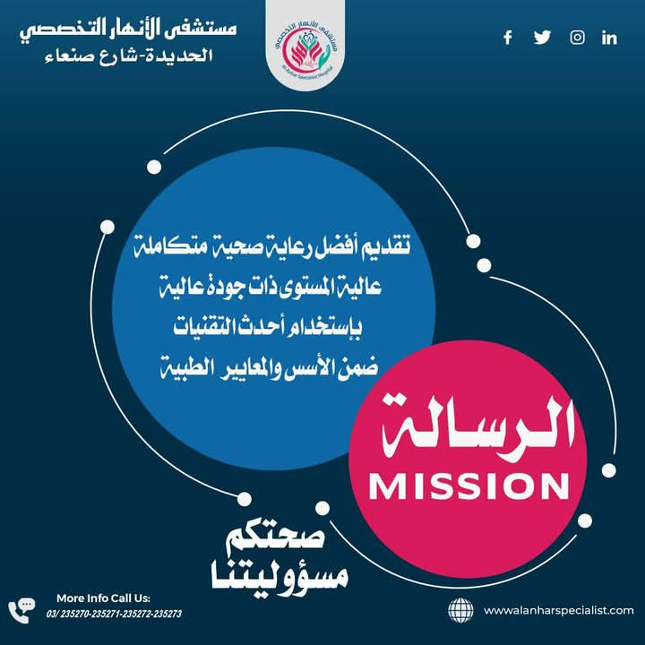

381 مستفيداً - نتائج المخيم
381 مستفيداً - نتائج المخيم
 عرض عيادة الأسنان
عرض عيادة الأسنان

خدمة الإسعاف الفوري وطوارئ 24 ساعة
استقبال جميع الحوادث والإصابات الحرجة والطوارئ العامة والتوليدية على مدار الساعة بسيارات إسعاف حديثة مزودة بأجهزة التنفس والدعم الحيوي.
دقة التشخيص، كفاءة المعالجة، وأحدث الأجهزة الطبية. نقدم رعاية طبية متكاملة واستقبال جميع الحوادث والإصابات الحرجة على مدار 24 ساعة بإشراف نخبة من كبار الاستشاريين والأخصائيين في محافظة الحديدة.
اكتب حرفين على الأقل، وستنتقل إلى دليل الخدمات.
تصفح صفحاتنا المتخصصة للتعرف على التفاصيل الكاملة للعيادات، الوحدات الطبية، الوحدات التشخيصية، الكوادر الاستشارية، وآخر الأخبار
استعرض جميع العيادات الاستشارية والتخصصية ومواعيد الدوام الصباحية والمسائية.
تعرف على وحدات الرعاية المركزة والحرجة، غرف العمليات الكبرى والمناظير، وأقسام الطوارئ والرقود.
مركز الأشعة التشخيصية (CT Scan & DR)، المختبر المركزي وبنك الدم، العلاج الطبيعي، والصيدلية.
تعرف على الكفاءات الطبية والتخصصات الدقيقة لكبار الاستشاريين والأخصائيين في المستشفى.
التعاقدات مع الشركات والمؤسسات والجهات الطبية، وخدمات رعاية المرضى والمقترحات.
تابع أحدث النجاحات الجراحية، الفعاليات العلمية، والمقالات التوعوية الطبية.
دقة التشخيص وكفاءة المعالجة بأحدث الأجهزة الطبية مع استقبال الحوادث والإصابات الحرجة على مدار الساعة
يقدم مستشفى الأنهار التخصصي عبر صفحة العروض الرسمية إعلانات موسمية ومخيمات طبية وتخفيضات خاصة لفترة محدودة. تفضلوا بزيارة صفحة العروض لمشاهدة التفاصيل الكاملة للإعلانات المتاحة حالياً، ومن ضمنها:
استعراض تخصصي لأبرز الإمكانات والتجهيزات الحديثة المتاحة لخدمتكم على مدار 24 ساعة

استقبال جميع الحوادث والإصابات الحرجة والطوارئ العامة والتوليدية على مدار الساعة بسيارات إسعاف حديثة مزودة بأجهزة التنفس والدعم الحيوي.

غرف عمليات معقمة بنظام الفلترة الكيميائية الهبائية للتعقيم ومجهزة بأحدث طاولات وأضواء الجراحة وتجهيزات مناظير متطورة لإجراء كافة العمليات الجراحية التخصصية.

مجهز بأحدث الأجهزة الأوتوماتيكية لإجراء الفحوصات الروتينية والدقيقة وفحوصات الهرمونات، دلالات الأورام، المزارع البكتيرية، وبنك الدم بدقة وسرعة متناهية.

تضم وحدة العناية المركزة للكبار، وحدة عناية الأطفال، وحدة حديثي الولادة والمبتسرين (الحضانات)، ووحدة العزل والرعاية التنفسية بأحدث أجهزة التنفس الصناعي.

يضم أحدث جهاز أشعة مقطعية (CT Scan) عالي السرعة، قسم الأشعة الرقمية الكشافة (DR)، السونار والدوبلر الملون، ووحدة إيكو القلب (ECHO).

توفير كافة الأدوية والمستلزمات الطبية المحلية والمستوردة المعتمدة للمرضى الداخليين والطوارئ على مدار 24 ساعة، مع أقسام رقود عام وخاص وأجنحة.
بنية تحتية طبية متكاملة وأحدث أجهزة الدعم الحيوي لضمان أعلى مستويات الأمان والرعاية لمرضانا
مجهزة بأحدث أنظمة الإنعاش والمراقبة الحرجة على مدار الساعة.
رعاية فائقة مخصصة للحالات الحرجة للأطفال بإشراف استشاري.
حضانات حديثة متكاملة مع أجهزة العلاج الضوئي والتنفس.
غرف خاصة، أجنحة ملكية، غرف عزل، ورقود عام مجهزة بأعلى معايير الراحة.
أجهزة تنفس اصطناعي متطورة للكبار والأطفال وحديثي الولادة.
أجهزة Patient Monitors لمراقبة الوظائف الحيوية بدقة لحظية، يديرها طاقم طبي مجهز بأعلى معايير الرعاية والاستجابة الفورية على مدار الساعة.
إجراء العمليات الجراحية التخصصية للأطفال وحديثي الولادة.
تواكب الجراحة المتقدمة الآمنة وبأحدث التجهيزات الجراحية.
نقدم أفضل مستويات الرعاية الصحية المتقدمة الشاملة لجميع أفراد الأسرة في الحديدة
تجهيزات تشخيصية وعلاجية حديثة تضمن أعلى درجات الدقة والأمان.
نخبة من كبار الاستشاريين والأخصائيين ذوي الكفاءة والخبرة المرجعية العالية.
جاهزية واستجابة فورية لكافة الحالات الطارئة والحرجة والحوادث طوال اليوم.
تكامل كافة الأقسام التشخيصية والجراحية ووحدات الرعاية الحرجة تحت سقف واحد.
الدوام الرسمي للعيادات: صباحاً (8:00 ص - 1:00 ظ) ومساءً (4:00 ع - 8:00 م) وتحت الاستدعاء 24 ساعة
معالجة وجراحة انزلاقات العمود الفقري، اعتلال الأعصاب، أورام المخ والأعصاب، نزيف وجلطات الدماغ، التشنجات والصرع، وإصابات الرأس والحوادث.
معالجة وجراحة كسور الأطراف العلوية والسفلية، إصلاح المفاصل والأوتار، تبديل المفاصل، علاج الخشونة والروماتيزم والنقرس، وكافة الكسور المعقدة.
متخصص في كسور الوجه والفكين، جراحات الأورام والأكياس المرضية، الشفة الأرنبية والعيوب الخلقية، وترميم وتجميل الوجه والذقن.
مدرب مساق بورد طب الأطفال وحاصل على شهادة تغذية الأطفال من جامعة بوسطن الأمريكية، ورعاية الخدج والحضانات.
جراحات المرارة والغدد والأورام، إصلاح الفتق، الزائدة، البواسير، الشق والناسور الشرجي، دوالي الساقين، القدم السكرية، ووصلات الغسيل الكلوي.
للمتابعة اليومية لرقود مرضى الكلى وحالات الفشل الكلوي، وتحت الاستدعاء لأي حالة طارئة على مدار 24 ساعة.
تشخيص ومتابعة الأمراض المزمنة، السكري، ضغط الدم، قرحة المعدة والقولون، أمراض الكبد، والغدة الدرقية.
رعاية الحمل ومتابعته بالدوبلر، الولادة الطبيعية والقيصرية، تأخر الإنجاب، وجراحات الرحم والمبايض والتجميل النسائي.
تقويم الأسنان، ابتسامة هوليوود والفينير، علاج وسحب العصب، التركيبات الثابتة (زيركون وإيماكس)، وأسنان الأطفال.
المبادئ التي نعمل بها لخدمتكم

نلتزم في مستشفى الأنهار التخصصي بمجموعة من القيم الأساسية التي توجه عملنا اليومي، وفي مقدمتها: الرحمة، الأمانة، الجودة، الاحترام، والعمل بروح الفريق. نؤمن بأن رعاية المريض تبدأ من القلب، وتنعكس في كل تفاصيل خدمتنا.

أن نكون المستشفى المرجعي الأول في محافظة الحديدة والمناطق المجاورة، من خلال تقديم رعاية طبية متكاملة بمعايير عالمية، والاستثمار في الكوادر البشرية والتقنيات الحديثة، لنكون الخيار الأول لثقة مرضانا.

تقديم خدمات طبية شاملة وعالية الجودة لجميع المرضى، من خلال كوادر مؤهلة وتقنيات حديثة، مع الالتزام بأعلى معايير السلامة والجودة، والمساهمة في خدمة المجتمع عبر برامج صحية وتوعوية مستدامة.
استقبال جميع الحوادث والإصابات الحرجة على مدار الساعة
فريق طبي جاهز لاستقبال جميع الحالات الطارئة والحوادث على مدار الساعة.
العناية المركزة، حديثي الولادة، والعناية التنفسية تعمل 24/7.
أشعة مقطعية CT Scan، أشعة رقمية الكشافة DR، وألتراساوند متوفرة للطوارئ 24/7.
خدمات مخبرية وفحوصات عاجلة وهرمونات ومزارع في أي وقت.
صيدلية المستشفى تخدم المرضى على مدار الساعة.
قم بتعبئة البيانات أدناه لحجز موعد وسيتم التواصل معك للتأكيد
يمكنكم التواصل المباشر مع موظفي الاستقبال والاستعلامات عبر الأرقام الرسمية التالية:
نحن هنا لخدمتكم والإجابة على كافة استفساراتكم على مدار الساعة
اختر تخصصًا للاستفسار عن الحجز والمواعيد.
تعمل الطوارئ والعناية المركزة على مدار الساعة وفق المعلومات المنشورة في الموقع.
يذكر الموقع وجود مختبر ومركز للأشعة المقطعية. للاستفسار عن التوفر الحالي يرجى التواصل مع المستشفى.
يمكن الاستفسار والحجز عبر واتساب المستشفى. مواعيد العيادات المنشورة صباحًا من 8 إلى 1 ومساءً من 4 إلى 8؛ يرجى تأكيد موعد الطبيب.
توجد معلومات العروض والباقات في صفحة العروض؛ يرجى التواصل مع المستشفى للتأكد من التفاصيل الحالية.
يمكن مراسلة واتساب الحجوزات على 771422070.